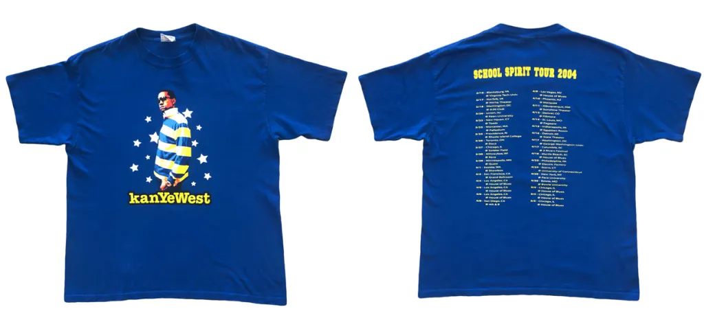
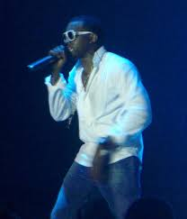
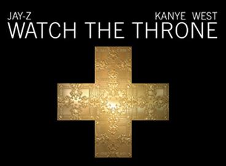
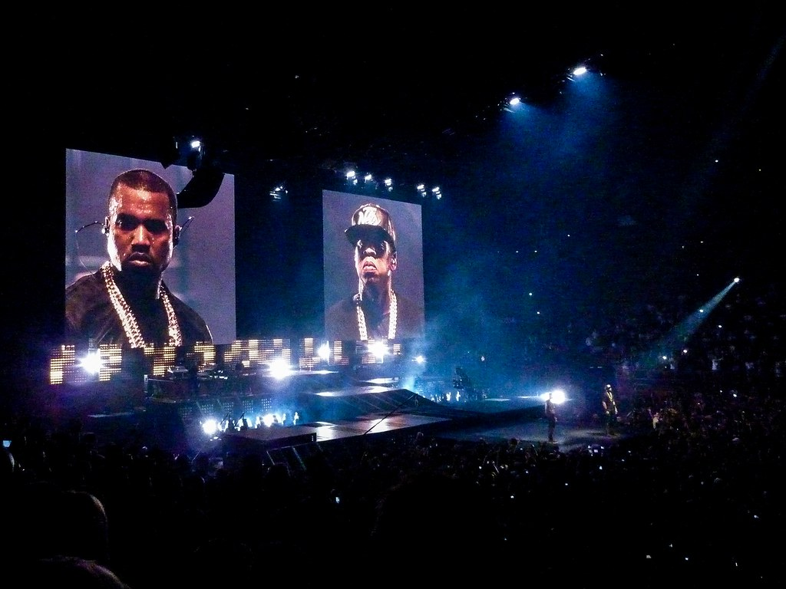
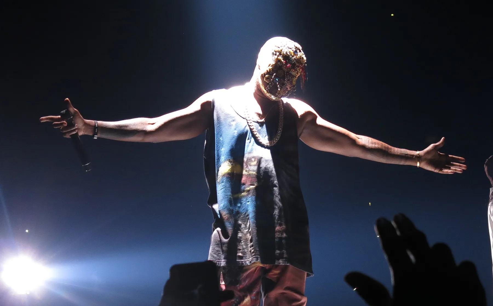
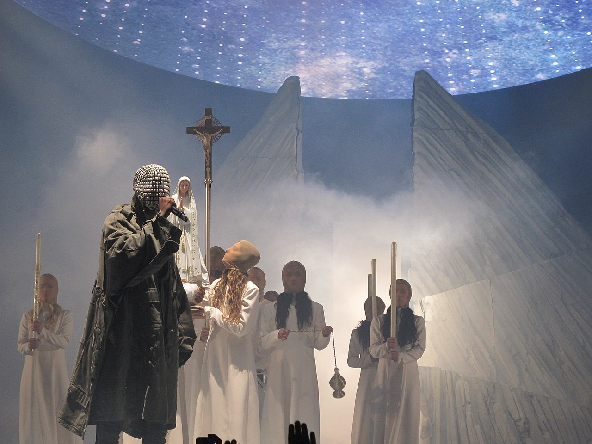
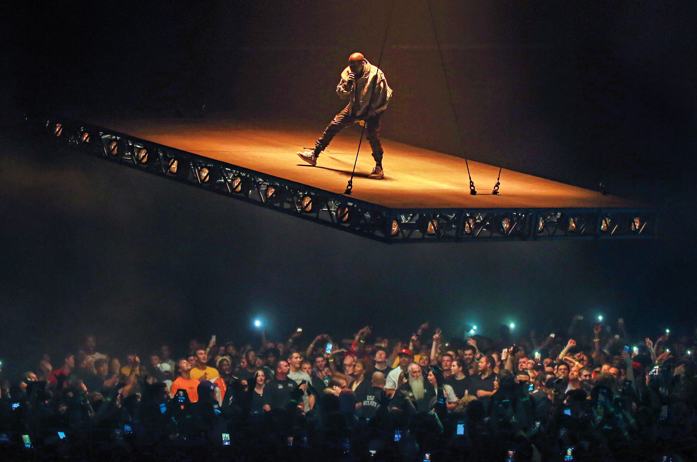
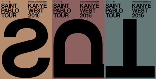
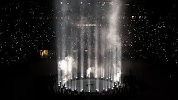

La segunda gira de Kanye, en soporte de Late Registration, fue su entrada oficial a las grandes ligas del touring. Con 46 fechas entre octubre de 2005 y diciembre del mismo año, el tour recorrió arenas de toda Norteamérica y recaudó alrededor de 5 millones de dólares. Las teloneras fueron Fantasia y Keyshia Cole, aunque Common iba a participar pero abandonó el tour horas antes del primer show porque acababa de conseguir un papel en una película.
El tour marcó el inicio de la colaboración con la diseñadora de escenarios británica Es Devlin, quien se convertiría en su principal colaboradora visual durante años. El escenario contaba con una sección de cuerdas femenina de seis integrantes, texturas de rocas volcánicas y montañas que creaban un paisaje surrealista, y proyecciones en las que se veían críticas negativas de medios y portadas de tabloides hablando mal de él, un gesto confrontacional que mezclaba vulnerabilidad con ego.
Sin embargo, el camino al escenario no fue fácil. Kanye descartó por completo el plan de iluminación apenas dos semanas antes del show inaugural en Miami y contrató a Es Devlin para rehacer todo el diseño desde cero en ese mismo plazo. Según el libro de Mark Beaumont Kanye West: God and Monster, se lo escuchó gritar "¡No estoy emocionado con hacer esta gira!" poco antes de abrirse el telón. Claro que una vez sobre el escenario, todo cambió.

La primera gira mundial de Kanye y uno de los shows en vivo más ambiciosos de la historia del rap. Con 88 presentaciones entre noviembre de 2007 y diciembre de 2008, el tour recorrió Norteamérica, Europa, Asia, Australia y Sudamérica. La etapa norteamericana arrancó el 16 de abril de 2008 en el KeyArena de Seattle con Rihanna, N.E.R.D. y Lupe Fiasco como teloneros. En distintas fechas internacionales también participaron Nas, Santigold y Kid Cudi.
El show era una ópera espacial de dos horas con narrativa completa: Kanye interpretaba a un astronauta que choca contra una tormenta de meteoritos, aterriza en un planeta desértico y sin creatividad, y debe encontrar el camino de regreso a casa. La nave espacial se llamaba "Jane", una computadora con voz femenina inspirada en HAL 9000 de 2001: Odisea del Espacio, con quien Kanye dialogaba durante el show. El escenario fue diseñado por Es Devlin, Martin Phillips y John McGuire, con colaboración del Jim Henson's Creature Shop para las criaturas animatrónicas. Había un monstruo gigante con ojos luminosos, un robot, columnas de fuego de seis metros de altura, humo seco y secuencias de láser por todo el recinto. Kanye se presentaba con una campera LED, lentes luminosos y accesorios de ciencia ficción.
Cada canción era una rearreglación original con nuevos acordes y variaciones, y Kanye actuaba solo en escena durante casi toda la noche sin descanso. El setlist incluía temas de sus primeros tres álbumes como "Good Morning", "All Falls Down", "Gold Digger", "Jesus Walks", "Stronger" y "Touch the Sky". En las etapas finales incorporó canciones de 808s & Heartbreak, aún sin lanzar, como "Heartless" y "Love Lockdown". El tour recaudó más de 30 millones de dólares y fue el tercer tour de hip-hop más taquillero de 2008 con más de 507.000 asistentes. El fotógrafo Nabil Elderkin documentó toda la gira en un libro de 300 páginas titulado simplemente Glow in the Dark. En México, Kanye se presentó el 17 de octubre de 2008 en el Palacio de los Deportes de la Ciudad de México, y al día siguiente en la Arena Monterrey.
.jpg) Video promocional del tour Archivo del show
Video promocional del tour Archivo del show
La primera colaboración en vivo entre Kanye West y Jay-Z, y uno de los tours más rentables de la historia del hip-hop. Arrancó el 28 de octubre de 2011 en Atlanta y cerró el 22 de junio de 2012 en Birmingham, Inglaterra, con 63 fechas en total entre Norteamérica y Europa. No había teloneros: los dos artistas se bastaban solos para llenar arenas. La gira fue el regreso de Kanye a los grandes escenarios tras casi cuatro años de ausencia desde el Glow in the Dark Tour, después de que en 2010 tuviera que cancelar el tour Fame Kills junto a Lady Gaga. La gira recaudó alrededor de 62 a 95 millones de dólares, convirtiéndola en una de las más exitosas económicamente en la historia del rap.
El diseño del escenario fue obra de Es Devlin, Geodezik, DONDA y Bruce Rodgers. El elemento central eran dos cubos gigantes móviles cubiertos de pantallas LED de alta resolución que se elevaban en el aire con Jay-Z y Kanye encima, creando la ilusión de que estaban flotando sobre tiburones, perros rottweiler, cuervos y tigres en la oscuridad. El vestuario fue diseñado por Givenchy, con remeras y pantalones de cuero que marcaban la estética del lujo hip-hop que define el álbum. El setlist incluía hits del disco colaborativo como "Otis", "N*ggas in Paris" y "H.A.M.", mezclados con clásicos solistas de cada artista. En varias noches tocaron "N*ggas in Paris" más de diez veces seguidas, simplemente porque el público no quería que parara. Esta gira inspiró directamente a Kanye a fundar DONDA, su empresa creativa dedicada a la producción artística y el diseño.


El regreso de Kanye a las giras en solitario después de cinco años, y posiblemente el show en vivo más teatral de toda su carrera. El New York Post lo calificó como "más que un concierto: una extravaganza de música y teatro, un espectáculo ineludible". El tour arrancó el 19 de octubre de 2013 en Seattle y recorrió Estados Unidos, Canadá y Australia hasta el 15 de septiembre de 2014 en Brisbane, con 53 fechas en total. Los teloneros fueron Kendrick Lamar, Pusha T, A Tribe Called Quest y Travis Scott en distintas fechas.
El corazón de la producción era el "Mount Yeezus", una montaña artificial de 15 metros de altura que dominaba el escenario y que en determinados momentos erupcionaba con fuego y humo real. La etapa se extendía en una pasarela triangular que llevaba al público hasta el centro de la actuación, como discípulos acercándose a un altar. Sobre el escenario había también un iceberg, una pantalla LED circular gigante con imágenes que iban de la iconografía religiosa a patrones abstractos, y en el clímax del show aparecía una figura representando a Jesús que daba sermones. Doce bailarinas con bodysuits color piel y velos eran llamadas por los fans "las discípulas". El vestuario fue diseñado por Maison Martin Margiela y Kanye alternaba diferentes máscaras a lo largo del show para representar distintas etapas de su propia personalidad.
El show estaba dividido en cinco actos temáticos: Fighting, Rising, Falling, Searching y Finding, introducidos con referencias bíblicas, siguiendo el arco de su propia vida. Kanye fue inspirado visualmente por la película de culto de Alejandro Jodorowsky La Montaña Sagrada (1973). El tour fue interrumpido durante 18 días cuando un camión con parte del equipo de producción sufrió un accidente y varias fechas debieron cancelarse o reprogramarse. Recaudó más de 31 millones de dólares solo en la primera etapa, siendo el tour de hip-hop más taquillero de 2013. Fue elegido el concierto más importante del año en el libro de Corbin Reiff Lighters in the Sky: The All-Time Greatest Concerts, 1960–2016.


Considerado por críticos y arquitectos como uno de los diseños de escenario más innovadores de la historia del live music. El tour arrancó el 25 de agosto de 2016 en Indianápolis con 42 presentaciones hasta el 19 de noviembre. El elemento que lo hizo legendario era una plataforma rectangular suspendida del techo del venue que se movía lentamente sobre la cabeza del público durante toda la noche, llevando a Kanye literalmente flotando sobre la audiencia. El piso entero del recinto era del público, sin escenario central ni vallas: todos miraban hacia arriba. El diseño fue creado por el equipo creativo DONDA, y la ingeniería de la plataforma suspendida fue considerada un hito técnico en la industria.
Cada show tenía tres secciones separadas por dos intermisiones, con el uso de luz aumentando progresivamente. Las segundas secciones incorporaban illusiones visuales inspiradas en la película Encuentros Cercanos del Tercer Tipo de Spielberg. El tour fue cancelado abruptamente el 19 de noviembre de 2016 en Sacramento, cuando Kanye realizó apenas tres canciones, comenzó un largo discurso sobre Jay-Z, Beyoncé y la política americana, y abandonó el escenario. Días después fue hospitalizado por agotamiento y estrés. Todos los fans que tenían entradas para las fechas restantes recibieron reembolso completo. A pesar del cierre abrupto, el legado visual del Saint Pablo Tour es indiscutible y sigue siendo referenciado en la industria del entretenimiento en vivo como un punto de inflexión.


Una nueva categoría de show que Kanye inventó prácticamente de la nada. En lugar de tours tradicionales, organizó cuatro listening parties masivas para presentar su álbum Donda antes de su lanzamiento. La primera fue el 22 de julio de 2021 en el Mercedes-Benz Stadium de Atlanta, donde Kanye presentó los temas por primera vez junto a artistas como Travis Scott y Lil Yachty, en un escenario minimalista pero cargado de peso emocional.
La segunda, el 5 de agosto también en Atlanta, fue la más icónica: una réplica a escala de la casa de su infancia en Chicago fue construida en el centro del estadio y prendida fuego en el clímax del show. Kim Kardashian apareció vestida de novia con un traje de Balenciaga caminando hacia él entre las llamas. La final tuvo lugar el 29 de agosto en el Soldier Field de Chicago, el estadio de su ciudad natal, frente a decenas de miles de personas, y al terminar el evento el álbum fue lanzado digitalmente de inmediato. Estas listening parties redefinieron cómo un artista puede usar el directo como herramienta de presentación artística, mezclando instalación, performance y emoción personal.


El gran regreso de Kanye a los escenarios del mundo después de años de ausencia. La gira arrancó en enero de 2026 en la Ciudad de México, con dos shows en la Monumental Plaza de Toros, marcando su primera visita al país desde el histórico show de 2008. Luego continuó por Europa, con una de las fechas más grandes programada para julio de 2026 en el RCF Arena de Reggio Emilia, Italia. También se realizaron conciertos en India, marcando su debut histórico en ese país ante miles de fans que llevaban años esperando verlo en vivo. Más fechas siguen siendo anunciadas, consolidando este tour como uno de los eventos musicales más esperados de 2026.
Sitio oficial del tour